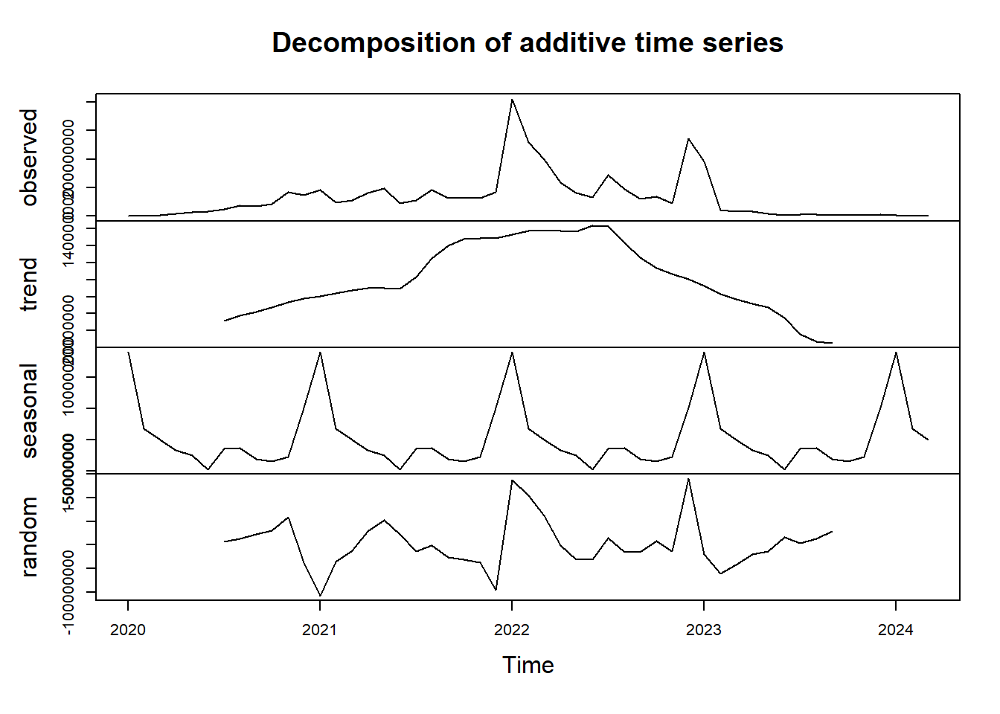
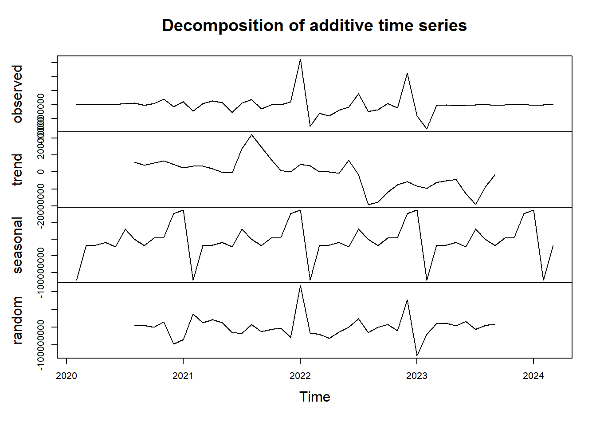
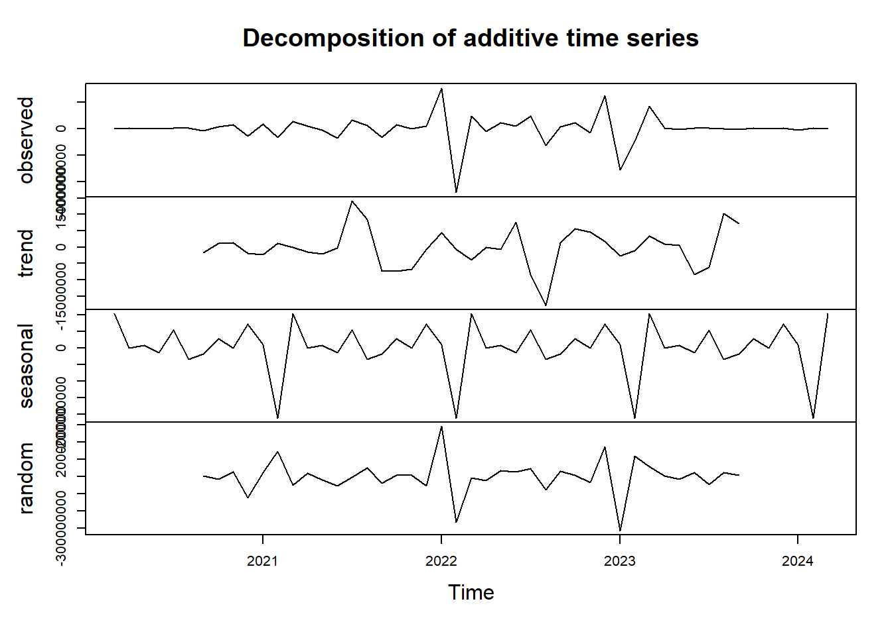
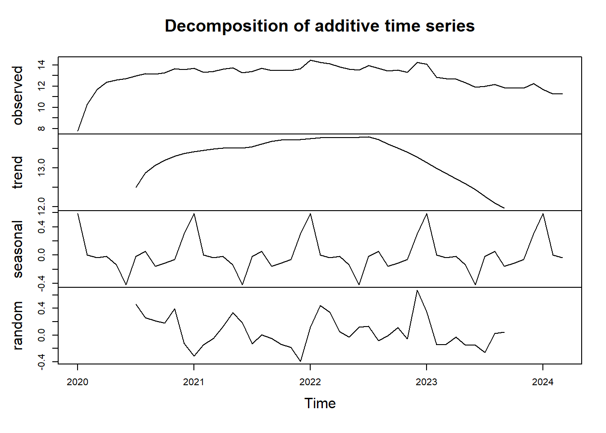
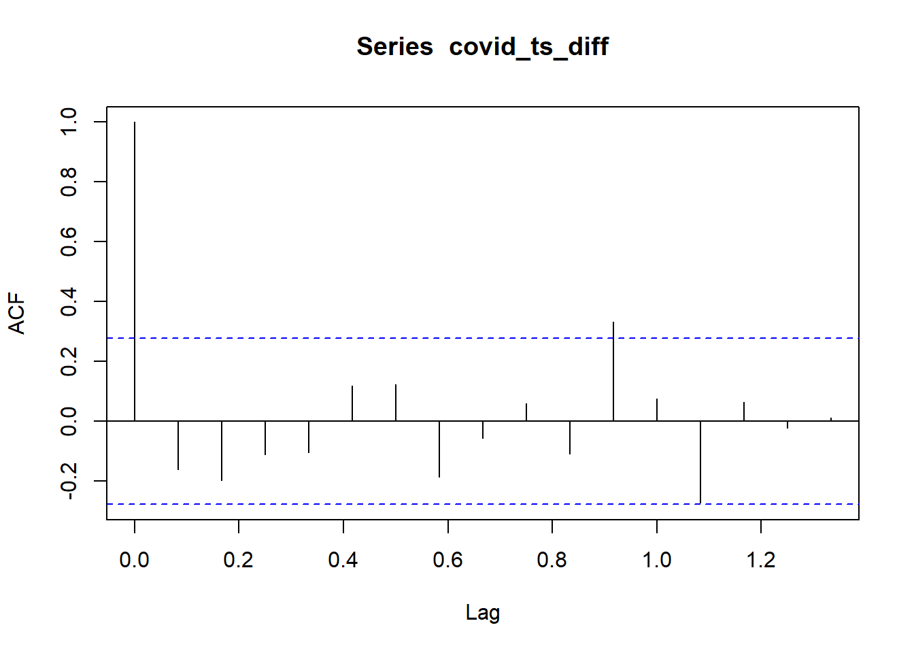
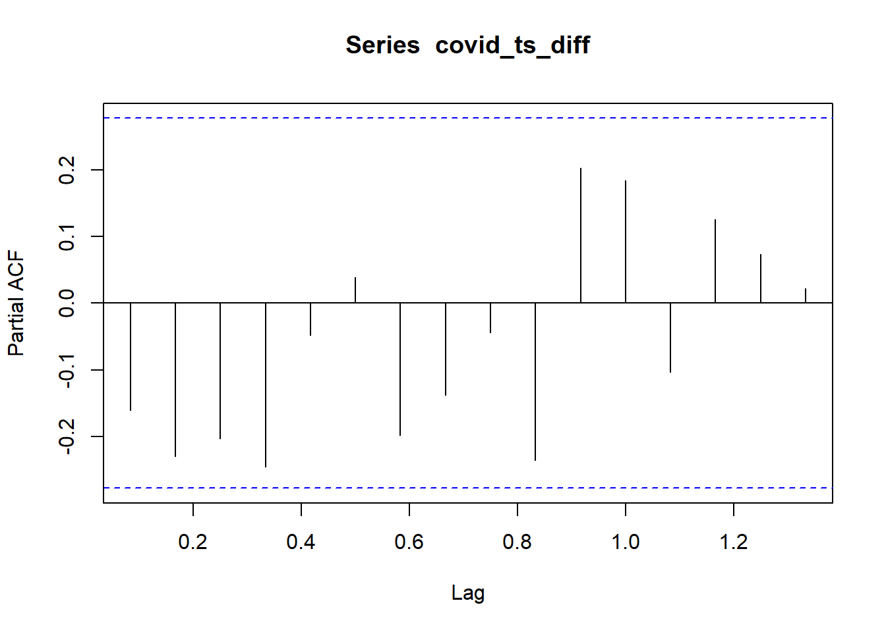

3 Descomposición de la serie de tiempo.
Descomposición:
Se descompone la serie de tiempo en sus componentes de tendencia, estacionalidad y error. Esto es útil para entender mejor la estructura de la serie y analizar patrones subyacentes.
En este caso, se puede utilizar la función decompose dado que los datos sean regulares (intervalos uniformes mensuales) y se estableció la frecuencia de 12 para datos mensuales.
Se utilizarán los datos de casos nuevos de Covid 19.

En la primera gráfica se observa la serie original como se había descrito anteriormente.
En la segunda gráfica (Trend) observamos la tendencia de los casos nuevos de covid en el tiempo, una línea suavizada que representa el movimiento general a largo plazo.
La tercera gráfica (seasonal) vemos la estacionalidad, muestra el patrón repetitivo que ocurre en intervalos regulares. A diferencia de la primera gráfica generada, en esta descomposición sí parece que existiera un patrón con picos a inicio de cada año y un pequeño incremento en la mitad del año.
Y en la última gráfica (random) Ruido, se muestra el residuo que queda después de eliminar tendencia y estacionalidad. Representa variaciones aleatorias o ruido en los datos. Idealmente, debería parecer una línea plana alrededor de cero si la descomposición es adecuada, sin embargo, se observa con claridad que no hay una línea plana y que en el año 2021, hay una disminución, mientras que en el año 2022 y 2023 hay picos.
Estacionariedad:
La estacionariedad es una propiedad de los datos en la que sus características estadísticas, como la media, la varianza y la autocorrelación, se mantienen constantes a lo largo del tiempo. Esta es una propiedad importante para muchos métodos de análisis y modelado de series temporales.
Una serie estacionaria tiene media constante, varianza constante y autocorrelación constante. Con datos estacionarios se facilita el modelado, pues algunos modelos como el ARIMA asumen que los datos son estacionarios, se mejora el pronóstico y la identificación de patrones.
Para verificar la estacionariedad en los datos de casos nuevos por COVID 19, se utilizará la prueba de Dickey-Fuller aumentado (ADF). El paquete aTSA proporciona una implementación de esta prueba.
##
## Augmented Dickey-Fuller Test
##
## data: indice_casos.ts
## Dickey-Fuller = -2.2878, Lag order = 3, p-value = 0.4587
## alternative hypothesis: stationaryEl valor p es 0.4587, indica que no hay suficiente evidencia para rechazar la hipótesis nula de que la serie no es estacionaria, en estos casos, se requeriría transformar o diferenciar los datos para que sean estacionarios.
Para ello se podría diferenciar la serie de datos, tomar diferencias sucesivas de la serie para convertirla en estacionaria.
covid_ts_diff <- diff(indice_casos.ts)
#Y se repite la prueba para verificar si funcionó la diferenciación y la serie ahora es estacionaria
covid_adf <- adf.test(covid_ts_diff)
print (covid_adf)##
## Augmented Dickey-Fuller Test
##
## data: covid_ts_diff
## Dickey-Fuller = -5.4418, Lag order = 3, p-value = 0.01
## alternative hypothesis: stationaryAhora se obtiene un valor p menor de 0.01, indica que ya es posible rechazar la hipótesis nula y concluir que la serie es estacionaria después de la primera diferenciación.
Con esta variable diferenciada, es posible proceder con un análisis o modelado asumiendo que los datos son estacionarios. Se pueden emplear modelos de serie de tiempo como ARIMA, que requieren estacionariedad.
Adicionalmente, previo al uso de ARIMA, se aplicarán las funciones acf (Autocorrelation Function) y pacf (Partial Autocorrelation Function) para examinar las relaciones entre los valores de la serie en diferentes retardos (lags). Estas dos funciones son herramientas clave para entender patrones y seleccionar modelos de series temporales, como ARIMA.

En la gráfica anterior identificamos que después de diferenciar los datos, se observa que cambia la tendencia, se mantiene un patrón en la estacionalidad y el ruido sigue presentando picos.
Se procede a realizar una segunda diferenciación, dado que a veces, una única diferenciación no es suficiente:
covid_ts_diff2 <- diff(covid_ts_diff)
covidcompDiff2 <- decompose(covid_ts_diff2)
plot(covidcompDiff2)
Con la segunda diferenciación, el ruido se mantiene. A continuación, se realiza una transformación Box Cox para estabilizar la varianza.
## Warning: package 'forecast' was built under R version 4.3.3# Encontrar el valor óptimo de lambda para la transformación de Box-Cox
lambda_optimo <- BoxCox.lambda(indice_casos.ts)
covid_boxcox <- BoxCox(indice_casos.ts, lambda = lambda_optimo)Con los datos transformados, se realiza una nueva descomposición:

Se raliza cálculo de Dickey Fuller para evaluar si hay estacionariedad con los datos transformados mediante Boxcox
##
## Augmented Dickey-Fuller Test
##
## data: covid_boxcox
## Dickey-Fuller = -1.8697, Lag order = 3, p-value = 0.6268
## alternative hypothesis: stationaryEl resultado de la prueba Dickey-Fuller con los datos transformados conBoxCox indica que el valor p = 0.6268 es mayor que el umbral de significancia, lo que significa que rechazamos la hipótesis nula de que la serie no es estacionaria.
En Resumen, con la transformación Box Cox, se redujo el Random, pero no se mejora la estacionariedad.
Nota:
Al encontrar que no había estacionariedad, se realizó una diferenciación de los datos, logrando después de ello la estacionariedad comprobada con la prueba estadística Dickey-Fuller, no obstante, al descomponer de nuevo, se sigue presentando alta variación en el random.
Para mejorar esta variación se realizó una segunda diferenciación, la cual se mantuvo con alta variación en Random.
Se realizó una transformación Box Cox, posterior a la cual los observados y las tendencias se suavizan, el random tuvo menos variaciones pero sin estacionariedad.
De acuerdo a lo anterior, se calculan las funciones de autocorrelación con los datos diferenciados una vez.
ACF: Función de Autocorrelación
Mide la correlación entre la serie original y versiones desplazadas (lags) de sí misma. Los valores en el gráfico muestran la correlación total entre la serie y los valores en retardos específicos, los ACF pueden ayudar a determinar el orden de los componentes MA en un modelo ARIMA.

Los picos que sobresalen de las líneas de significancia sugieren retardos con autocorrelación significativa. En este caso, solo se observan dos picos, uno al inicio y otro en el lag 0.9.
PACF: Función de Autocorrelación Parcial
Mide la correlación entre una serie y sus retardos eliminando la influencia de los retardos intermedios. Los valores significativos en el gráfico PACF sugieren el orden de los componentes AR en un modelo ARIMA.

Todos los picos en el gráfico de PACF están dentro de las líneas de significancia, generalmente indica que no hay autocorrelaciones parciales significativas entre la serie de tiempo y sus retardos. Esto sugiere que la serie no tiene un fuerte componente autorregresivo, al menos en los retardos observados. Si ningún pico sobresale de las líneas de significancia, el componente AR del modelo ARIMA puede ser insignificante. Esto significa que la serie probablemente no tiene una fuerte dependencia autorregresiva, es decir que los valores pasados de la serie no están influyendo significativamente en los valores actuales, que la serie se comporta de forma más aleatoria y no sigue patrones claros que se puedan identificar fácilmente a partir de los valores pasados.
Con lo anterior, Los modelos autorregresivos (AR) no serían útiles para modelar la serie. En este caso, se podrían examinar otras características de la serie. Como el ACF muestra picos significativos, es posible que un modelo MA sea más apropiado, también se podría considerar modelos más complejos como SARIMA.